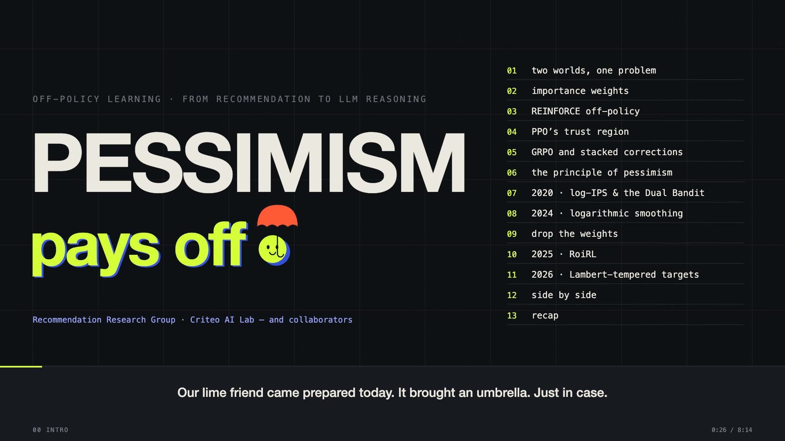

/ 8:14 VIDEO
Pessimism pays off:
off-policy learning, from recommendation to LLM reasoning.
A review of our work at Criteo AI Lab: why learning from logged or stale data should be pessimistic, from log-IPS and logarithmic smoothing to RoiRL and Lambert-tempered targets, compared with REINFORCE, PPO and GRPO.
Read article
WATCH ON YOUTUBE ↗08:14 ↗